ES 667 · Deep Learning · Generative Modelling I
Learning to generateDistributions, autoencoders and VAEs, built from one handwritten 3
A 3 turns into a 7. Every frame is decoded from a point on a straight line through the code space of the VAE we train today.
Nipun Batra · IIT Gandhinagar
Start with a question
Who are these people?
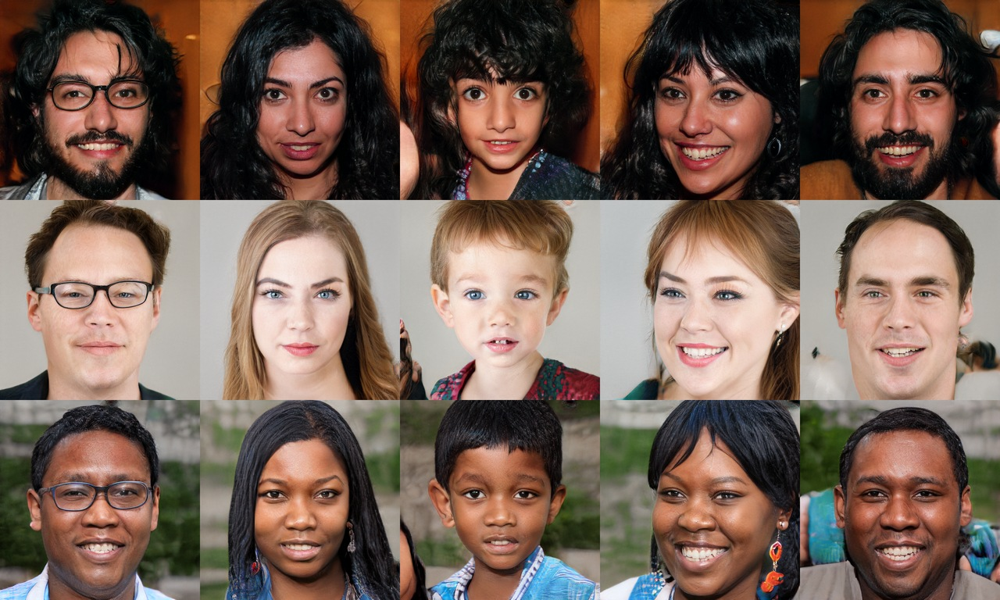
Look closely: skin, hair, glasses, lighting, background. Anything odd?
No one. Each face is a random vector of 512 numbers pushed through a trained network.
Karras, Laine & Aila, A Style-Based Generator Architecture for GANs (StyleGAN), 2019 · CC BY-NC 4.0
Your turn to be the judge
Real or generated?
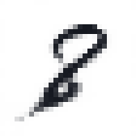
1generated

2real

3generated

4real

5real

6generated
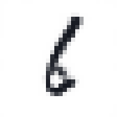
7generated
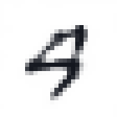
8generated

9real

10generated
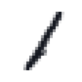
11real
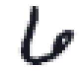
12real
Six are MNIST test digits, six come from a network. Write down which six are fake.
Generated: 1, 3, 6, 7, 8, 10 (teal frames). Six from a small GAN, trained in about 9 minutes: the topic of the next lecture.
Generation is not only "make a random picture"
Predict the output, then look
a sketch → a photo
 →
→

a horse → a zebra
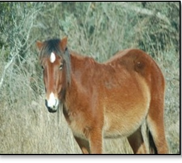
→
fill a hole
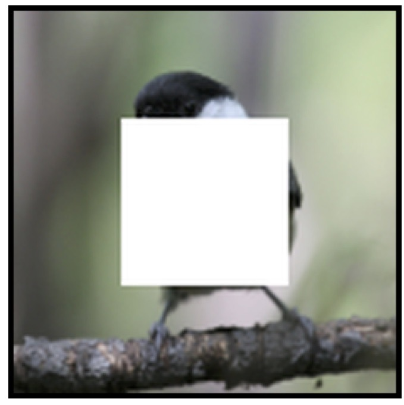
→
a label map → a landscape
 →
→
What should come out on the right? Is there exactly one right answer?
Each input allows many plausible outputs. A generator must pick one that looks real.
pix2pix (Isola et al. 2017) · CycleGAN (Zhu et al. 2017) · Context Encoders (Pathak et al. 2016) · SPADE (Park et al. 2019). All published model outputs.
One input, many answers
The same label map, three different photographs
the condition
sample 1

sample 2

sample 3
A generator does not learn one answer. It learns a distribution of answers and draws from it.
SPADE / GauGAN, Park et al. 2019, teaser figure: here the variation comes from a style image given to the generator.
What all of these share
Randomness in, a learned network, a sample out
Training means: adjust $\theta$ until the samples look like the data. But what is the loss?
What can the condition be?
Tell the generator what you want
a label $c = 7$
our own conditional VAE: eight different random $z$, all asked for a 7
a sentence + a date “a satellite image of an electric substation in Finland”, August vs January
DiffusionSat (Khanna et al., 2024): same caption, only the month changes
a sentence + a place “a satellite image of a stadium”, France vs USA coordinates
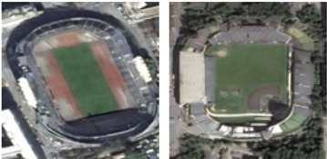
DiffusionSat: same caption, only the latitude and longitude change
an image a sketch, a label map, a photo with a hole
→pix2pix, from the earlier slide
The condition fixes what; the randomness still decides which one of the many matching outputs you get.
Our conditional VAE, all labels at once
The label picks the digit; the random $z$ picks the style
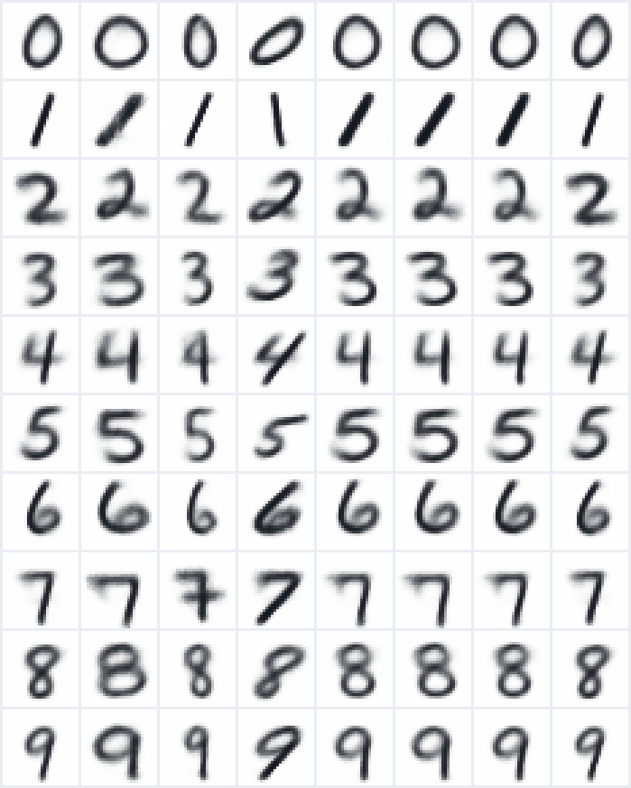
Each row: one label $c$, from 0 to 9.
Each column: one random $z$, the same all the way down.
Read down a column: every digit is written with the same slant and thickness. The code $z$ carries the handwriting; the label carries the identity.
Earlier in this course
You have already built a generator
Our name model reads three characters and gives a probability for every next character.
after a a b, the trained model says:
Generate: sample a character, append it, repeat.
A different random draw at any step gives a different name. That is a generative model: it gives probabilities, and we sample from them.
Same idea today: learn a distribution, then sample from it. Only now the samples are images.
Earlier in this course
A whole name gets one probability
| context | next | probability | −log p |
|---|---|---|---|
| – – – | a | 0.08 | 2.53 |
| – – a | a | 0.08 | 2.53 |
| – a a | b | 0.02 | 3.91 |
| a a b | i | 0.12 | 2.12 |
| a b i | d | 0.09 | 2.41 |
| b i d | – | 0.23 | 1.47 |
| aabid | 3.2 × 10⁻⁷ | 14.96 |
Training made this number large for every name in the data. That is maximum likelihood, and it is what we want for images too.
From names to digits
Two ways to generate a 28 × 28 digit
Today: route B. Two questions: where does $z$ come from, and how do we train a decoder when no one tells us the right $z$?
Route A, the way our name model worked
Predict each pixel from the pixels already drawn
Route A, trained on MNIST
What these two pixel-by-pixel models generate
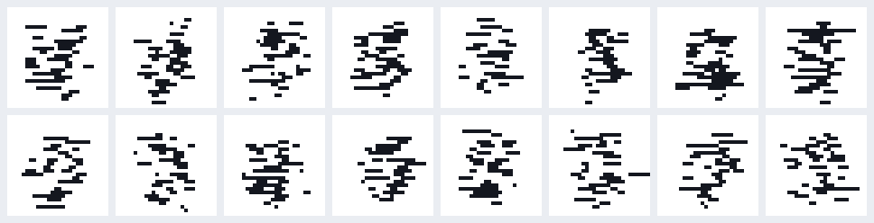
context: 3 previous pixels · $\log p(\text{our }3) = −123.7$
context: 24 pixels above and left · $\log p(\text{our }3) = −69.4$
More context, better strokes. And route A gives an exact $\log p(x)$: just add the 784 log-probabilities.
So why route B today?
Two routes, different strengths
| A · pixel by pixel | B · one code, one pass | |
|---|---|---|
| generate one image | 784 network calls, in order | 1 network call |
| $\log p(x)$ of an image | exact: a sum of 784 terms | an integral over codes: hard |
| a short summary $z$ | none | yes: 2 to 100 numbers you can move, mix, edit |
| used today in | language models; image models over image tokens | VAEs, GANs, and the latent space of diffusion models |
Route A is the name model you already know. Today is route B: what the code is, and how to train a decoder when nobody tells us the right code.
The plan
Today's route, in two sessions
Session 1
- Distributions and fittinga 1-D toy: fit, sample, how many bumps
- Autoencodersplain, denoising, sparse, contractive; why they cannot generate
- The probabilistic viewprior, likelihood, an intractable posterior
Session 2
- KL divergencehow far apart are two distributions?
- Variational inference and the ELBOa loss that never computes $p(x)$
- Reparameterisationbackprop through a random draw
- The VAE on MNISTone digit, end to end, with real numbers
One running image throughout: test digit #90, a handwritten 3. GANs get their own lecture.
Part 1 of 7
Learn a distribution from examples, then sample from it
We have seen what generators can do. Before any network, the whole idea on one number: what does "learning" mean, and how do we then make new samples?
- 1Distributions and fitting
- 2Autoencoders
- 3The probabilistic view
- 4KL divergence
- 5Variational inference and the ELBO
- 6Reparameterisation
- 7The VAE on MNIST
What are we trying to do?
Examples in, a model out, new examples from the model
1 · Learn
Choose the model's parameters $\theta$ so that the examples we have are probable under it.2 · Generate
Draw new samples from the learned model $p_\theta$.Our toy data
200 numbers from a recipe we keep hidden
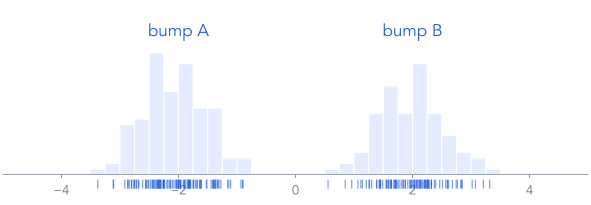
The model sees only these 200 numbers, not the recipe. Goal: learn from them, then produce a 201st that looks like it belongs.
A tempting answer
The average is a terrible sample
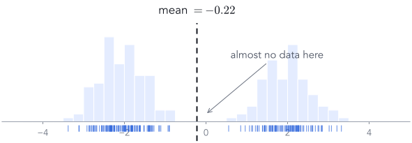
The mean is a number that almost never occurs. Generating needs the whole spread of the data, not one summary of it.
Our first model: one Gaussian · how it scores a number
How probable is $x = 1.5$ under a bump at 2?
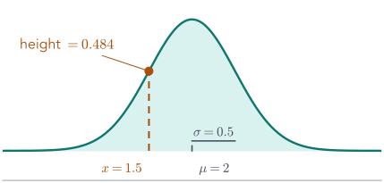
The model's two parameters, $\mu$ and $\sigma$, decide how high the curve is at every $x$. Higher means more probable.
Step 1 · Learn
Score a choice of $\mu, \sigma$ on all 200 numbers
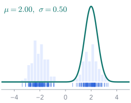
$\log p = −3746.0$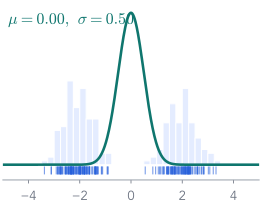
$\log p = −1790.0$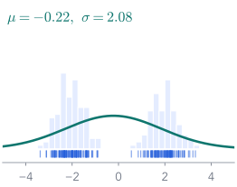
$\log p = −430.0$Learning = keep the $\theta$ with the highest score. That is maximum likelihood, the same rule that trained the name model.
Step 1 · Learn, then Step 2 · Generate
The best Gaussian has a formula; then we sample from it
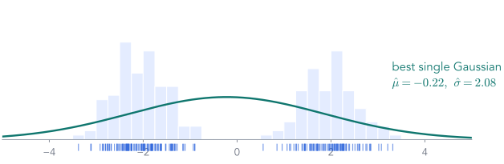
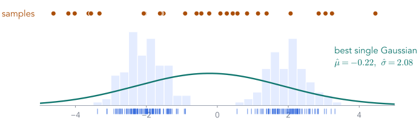
Setting the derivative of the score to zero gives these two numbers: the same answer as the third candidate.
Step 2: 11 of 30 samples land in the empty gap. Learning worked; the model was too simple.
The same fit, in PyTorch
Learning = gradient descent on the negative log-likelihood
x = torch.tensor(data) # the 200 numbers mu = torch.tensor(1.0, requires_grad=True) log_sigma = torch.tensor(0.0, requires_grad=True) opt = torch.optim.Adam([mu, log_sigma], lr=0.05) for step in range(300): dist = Normal(mu, log_sigma.exp()) loss = -dist.log_prob(x).mean() opt.zero_grad(); loss.backward(); opt.step() x_new = dist.sample((30,)) # step 2: generate
The parameters $\theta = (\mu, \log\sigma)$, started anywhere. We learn $\log\sigma$ so that $\sigma = e^{\log\sigma}$ is always positive.
The loss is the score from the last slide with a minus sign, averaged: $-\frac1N\sum_i \log\N(x_i;\mu,\sigma^2)$.
The update: nudge $\mu$ and $\log\sigma$ downhill, 300 times. The same loop trains every network in this course.
Result: $\mu = −0.22$, $\sigma = 2.08$, exactly the formula's answer. Then sample is step 2.
Watch the fit happen
Four moments of that loop
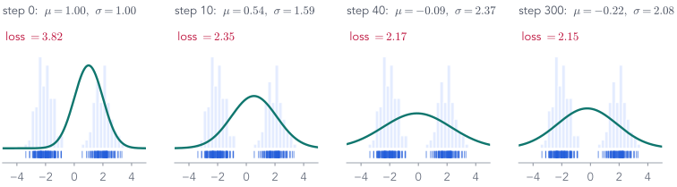
The curve starts in the wrong place, widens to cover both clumps, and stops at the best single bump. The loss falls from 3.82 to 2.15.
Checkpoint
So far: learn and generate work; one bump is not enough
| what we did | result | |
|---|---|---|
| Learn | chose $\mu, \sigma$ to maximise $\log p_\theta(\text{data})$ | $\hat\mu = −0.22,\ \hat\sigma = 2.08$ |
| Generate | sampled $x = \hat\mu + \hat\sigma\eps$ | many samples in the gap |
| Fix | a richer model that can make two clumps | next slide |
A richer model: tell a story
Hidden choice first, then the number
This is how we will generate: run the two steps. The coin is never written down in the data, so it is a hidden (latent) variable $z$.
How the new model scores a number
To score $x$, add up every way it could have been made
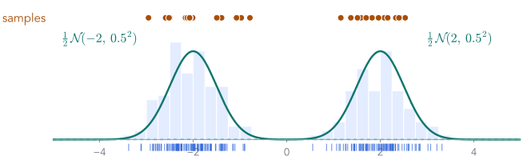
One hidden coin flip made the model rich enough: the samples now fall in the bumps, not in the gap.
Fitting $K$ bumps in PyTorch
Same loop, a richer log_prob
logits = torch.zeros(K, requires_grad=True) # bump weights means = torch.randn(K, requires_grad=True) log_sd = torch.zeros(K, requires_grad=True) def log_p(x): # log p(x), shape [N] comp = Normal(means, log_sd.exp()).log_prob(x[:, None]) # [N, K] return torch.logsumexp(log_softmax(logits) + comp, dim=1) loss = -log_p(x).mean() # then the same 3-line update
Three parameters per bump: a weight, a centre, a width. softmax turns the weights into probabilities that sum to 1.
Every number under every bump: $\log p(x_i\mid z = k)$ for all $i$ and $k$, a table of $N \times K$ log-densities.
The sum over the hidden choice: $\log\sum_k p(k)\,p(x\mid k)$. logsumexp does it without underflow.
Training is unchanged. With $K = 2$ it finds centres −2.06 and 1.98, widths 0.52 and 0.54.
Step 2 · Generate, from the two-bump fit
Sampling runs the story: choose a bump, then a number
weights = softmax(logits) k = torch.multinomial(weights, 1000, replacement=True) # the coin x_new = means[k] + log_sd.exp()[k] * torch.randn(1000)
Step 1: pick a bump for each sample, with the learned weights.
Step 2: draw a number from that bump: its centre plus its width times standard noise.
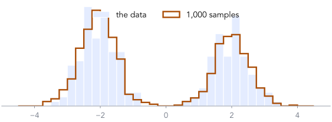
1,000 new numbers that follow the data, and none of them is a copy of a training number.
But how many bumps should we fit?
More bumps always fit the training data better
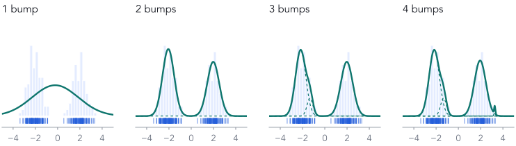
1, 2, 3, 4 bumps, each fitted with the same loop. The training score rises every time. So which one do we keep?
Score on data the fit has never seen
New data decides: two bumps
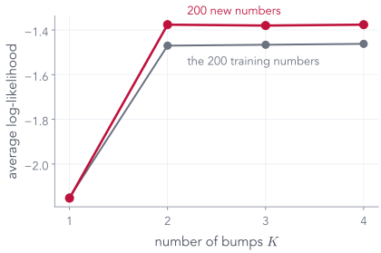
Draw 200 new numbers from the same hidden recipe and score each fit on them.
1 → 2 bumps: $−2.153 \to −1.376$ per number. A real improvement.
3 or 4 bumps: the training score creeps up, the new-data score does not. The extra bumps fit noise in the 200 training numbers.
Choose the size of a model by how well it scores data it has not seen. That holds for bumps, and for networks.
Step 1 · Learn, looked at closely
Hidden in the fit: which bump made each point?
If we knew the coin for every point
fitting is easy: average the A-points for bump A's centre, the B-points for bump B's.We don't, so ask for each point
given this $x$, how probable is it that bump B made it? That is $p(\mathrm{B}\mid x)$.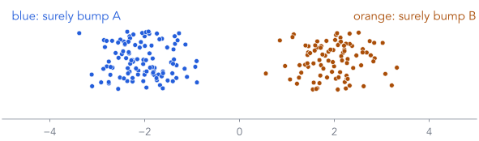
Running the story backwards, from a number to its likely hidden cause, is called inference. The gradient descent we just ran was doing it all along: four slides on, we will see where.
The backwards step, worked by hand
You see $x = 0.1$. Which bump made it?
| bump $z$ | prior $p(z)$ | likelihood $p(x\mid z)$ | prior × likelihood | ÷ total = posterior |
|---|---|---|---|---|
| A, centre $-2$ | 0.5 | $1.18\times 10^{-4}$ | $5.89\times 10^{-5}$ | 0.168 |
| B, centre $2$ | 0.5 | $5.84\times 10^{-4}$ | $2.92\times 10^{-4}$ | 0.832 |
| total $= p(x)$ | $3.51\times 10^{-4}$ | 1.000 |
Bayes' rule is just this table: multiply, then divide by the total. Note the total is exactly the $p(x)$ of the two-bump formula.
Do it for every $x$
The backwards step, as a curve
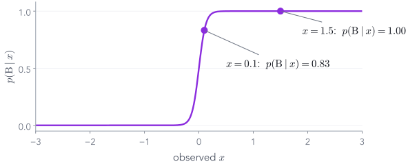
Repeat the table for every $x$ and plot $p(\mathrm{B}\mid x)$.
Far right: certainly B. Far left: certainly A. Near 0: unsure.
For these two bumps the curve is exactly $\mathrm{sigmoid}(16x)$: a logistic regression in disguise.
These are the colours on the 200 points two slides ago.
The backwards step, in one line
Posterior = softmax of (log prior + log likelihood)
log_joint = log_softmax(logits) + Normal(means, log_sd.exp()).log_prob(x) # [K] posterior = softmax(log_joint) # divide by the total: Bayes
With the fitted bumps, at $x = 0.1$: $p(\mathrm{A}\mid x) = 0.094$, $p(\mathrm{B}\mid x) = 0.906$. (With the true recipe it was 0.832: the fitted bumps are slightly different.)
Softmax is "exponentiate, then divide by the total": exactly the last column of the Bayes table.
Why learning needs the backwards step
The gradient of $\log p(x)$ is weighted by the posterior
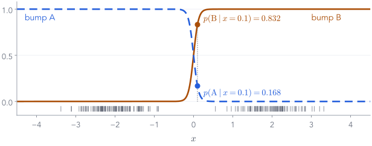
At $x = 0.1$: bump B's centre is pulled by $0.832 \times (0.1 - 2)/0.25 = −6.32$, bump A's by $0.168 \times (0.1 + 2)/0.25 = 1.41$.
Each point pulls each bump in proportion to how likely that bump made it. Learning needs the posterior for every point: a 2-row table here, an intractable patch for images.
Four words for the rest of the lecture
Prior, likelihood, evidence, posterior
| name | symbol | question it answers | at $x = 0.1$ |
|---|---|---|---|
| prior | $p(z)$ | what do we believe about $z$ before seeing $x$? | 0.5, 0.5 |
| likelihood | $p(x\mid z)$ | if $z$ were known, how probable is this $x$? | $5.84\times 10^{-4}$ for B |
| evidence | $p(x)$ | how probable is $x$ overall, summing over $z$? | $3.51\times 10^{-4}$ |
| posterior | $p(z\mid x)$ | having seen $x$, which $z$ explains it? | B: 0.832 |
Generating uses the prior and the likelihood. Learning needs the evidence and the posterior.
Part 1, second half
The same recipe, on real images
Learn a distribution, then sample from it: can Gaussian bumps generate handwritten digits? How far does this simple toolkit get us, and where does it run out?
The plan, as a picture
Squeeze, fit bumps, sample, un-squeeze
Two questions before any code: each bump is a Gaussian over what? And how many bumps?
Which dimension is each Gaussian?
One bump, three possible sizes
| each bump is a Gaussian over | centre | covariance | numbers per bump, with its weight |
|---|---|---|---|
| 1 number (the toy) | 1 | 1 (a width) | 3 |
| 784 pixels, every pixel on its own | 784 | 784 widths | 1,569 |
| 784 pixels, with all pixel pairs | 784 | 307,720 | 308,505 |
| 50 PCA numbers (what we fit) | 50 | 1,275 | 1,326 |
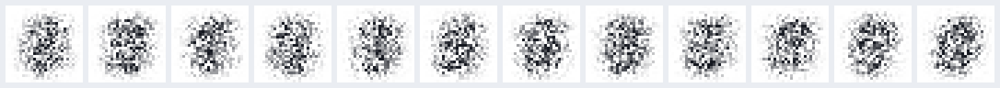
Samples from one 784-pixel Gaussian with independent pixels: each pixel jitters on its own, so you get static around the average digit. Strokes need pixels that move together.
Keep the covariance, shrink the dimension: a full Gaussian over 50 numbers costs about 230 times less than one over 784 pixels.
The squeeze, and the way back
PCA and inverse PCA: generation needs both
PCA, image to $d$ numbers: coordinates along the $d$ directions in which digits vary most.
Inverse PCA, $d$ numbers back to an image: add the directions back onto the mean digit.
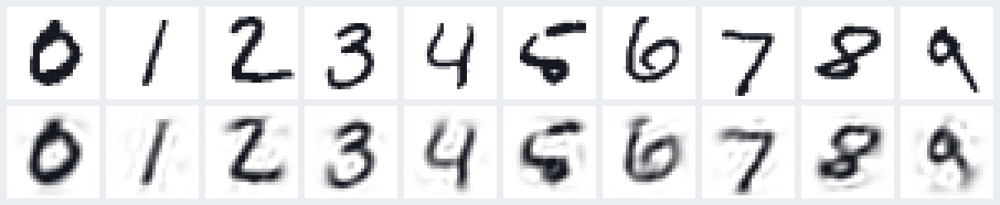
top: test digits, our 3 among them · bottom: PCA to 50 numbers, then inverse PCA
The bumps only ever see $z$. Every generated sample is $d$ numbers until the inverse PCA turns it into pixels. With $d = 50$, 82.5% of the variation survives the round trip.
Squeeze all the way to 2 numbers
In 2-D you can see every bump
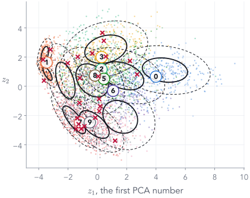
4,000 test digits by their 2 PCA numbers, coloured by label (the model never saw labels). Black: 10 fitted bumps, 1 and 2 widths. Red ×: 24 samples.
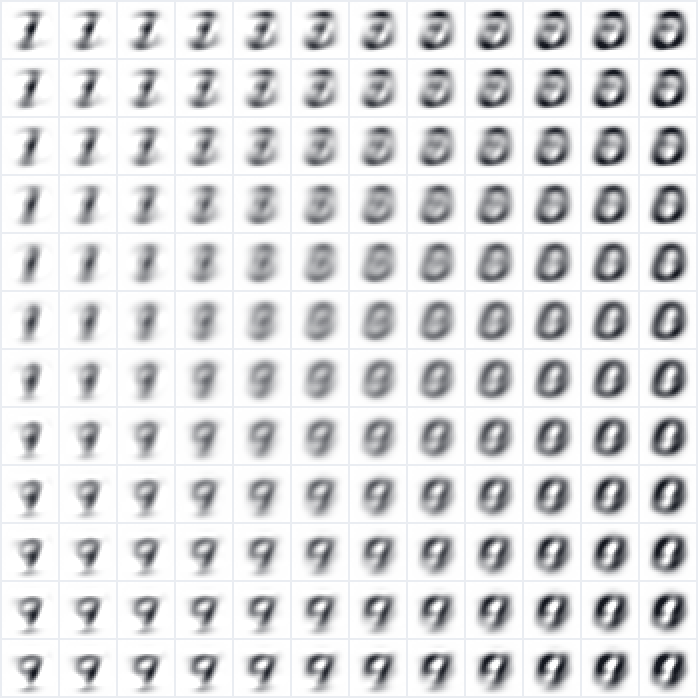
Inverse PCA of a grid over the plane: every point is a blend of a few blurry shapes.
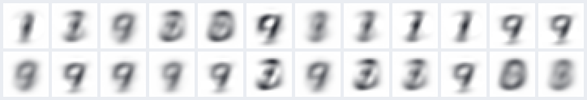
the 24 red × after inverse PCA
2 numbers keep only 16.8% of the variation. Every bump is visible, every sample is a ghost: interpretable is not the same as good.
The two-bump code, scaled up
PCA, fit $K$ bumps, sample, inverse PCA
x = mnist_train.flatten(1) # [60000, 784], grey levels mean = x.mean(0) _, _, Vt = torch.linalg.svd(x - mean, full_matrices=False) V = Vt[:d].T # [784, d] z = (x - mean) @ V # PCA: [60000, d] gmm = MixtureSameFamily(Categorical(logits=logits), MultivariateNormal(means, scale_tril=L)) loss = -gmm.log_prob(z_batch).mean() # the same 3-line update z_new = gmm.sample((24,)) # step 2: generate x_new = (mean + z_new @ V.T).clamp(0, 1) # inverse PCA: [24, 784]
PCA: one SVD gives the directions; each image becomes $d$ numbers.
The mixture: logits [K], means [K, d], L [K, d, d] lower-triangular, so each covariance $LL^\top$ is always valid.
Learning: the loop that fitted the two bumps, unchanged: minus the average log-probability, Adam.
Generating: pick a bump by its weight, draw $d$ numbers from it, inverse PCA to 784 pixels.
Try it: every combination below was fitted
Slide the dimension and the number of bumps
variation kept by $d$ numbers: 82.5%
parameters: 132,599
score on new images: −16.5
new images prefer $K$ = 100 at this $d$
test digits
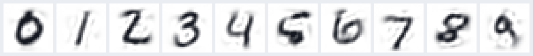
after PCA to $d$ numbers and back
24 samples from the $K$-bump fit, after inverse PCA
How many bumps for MNIST?
The toy's rule: score on images the model has not seen
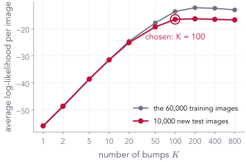
$d = 50$. Fit $K$ = 1, 2, 5, 10, 20, 50, 100, 200, 400, 800 bumps to the 60,000 training images.
Training images: more bumps fit them better, as with the toy.
10,000 new test images: the score stops improving at $K = 100$. Doubling to 200 bumps changes the score by +0.2 nats. At 800 even the training score drops: that many bumps are more than 2,000 steps can fit.
Pick the smallest $K$ that does as well as any on new images: $K = 100$, 132,599 parameters, each bump a Gaussian over 50 numbers.
Choosing $K$ without held-out images
AIC and BIC: charge for every parameter
$\log L$: the training log-likelihood, summed over all $N$ = 60,000 images · $p$: the number of parameters · smaller is better
| rule | needs | price per parameter | picks |
|---|---|---|---|
| score on new images | 10,000 extra images | none, it is measured | $K = 100$ |
| AIC | training data only | 2 | $K = 100$ |
| BIC | training data only | $\log 60{,}000 = 11.0$ | $K = 50$ |
New images and AIC agree on $K = 100$; BIC, which charges more per parameter, keeps only 50. With plenty of data, measure on new data; with little, AIC or BIC.
What the bumps learned
Each bump's centre is a style of digit
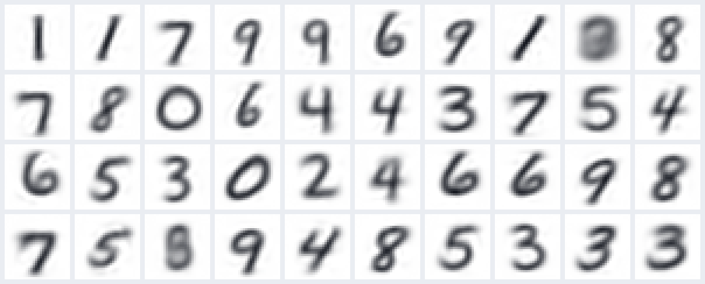
the centres of the 100-bump fit, after inverse PCA, heaviest bump first (the heaviest has weight 3.9%)
The hidden coin now has 100 sides, one prototype each, found without the labels. The backwards step $p(z\mid x)$ is still just a 100-row table.
Step 2 · Generate
Samples, as the number of bumps grows
1 bump: a single Gaussian over the 50 numbers of every digit
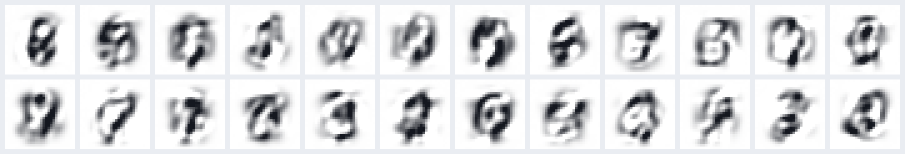
10 bumps
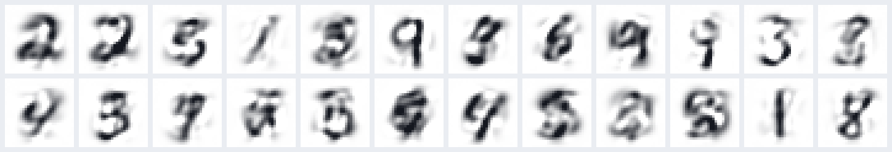
100 bumps, the size chosen on new images
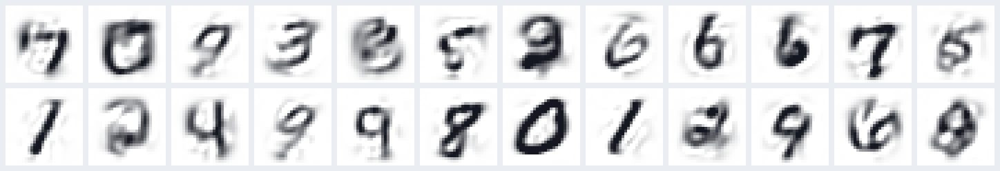
Or skip PCA: model the 784 pixels directly
A mixture of Bernoullis: each bump is 784 ink probabilities
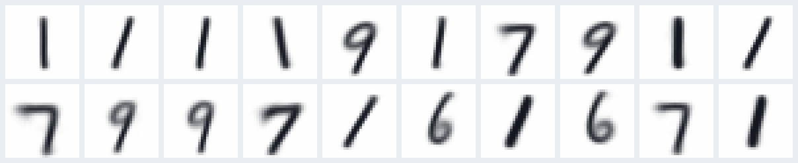
the 20 heaviest of 200 bumps: $\pi_k$, ink probability per pixel
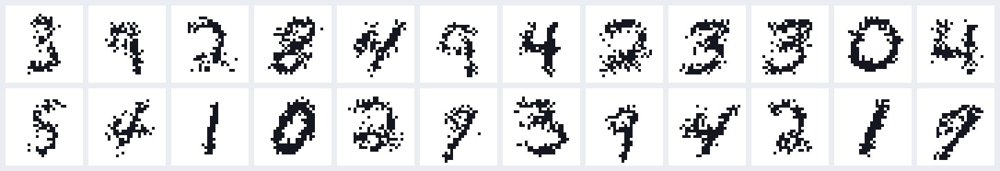
samples: pick a bump, flip each pixel's coin
Inside a bump every pixel is on its own, so samples are speckled; only the choice of bump ties pixels together. Same lesson as the 784-pixel Gaussian.
An honest look
New digits, not copies, and not yet sharp
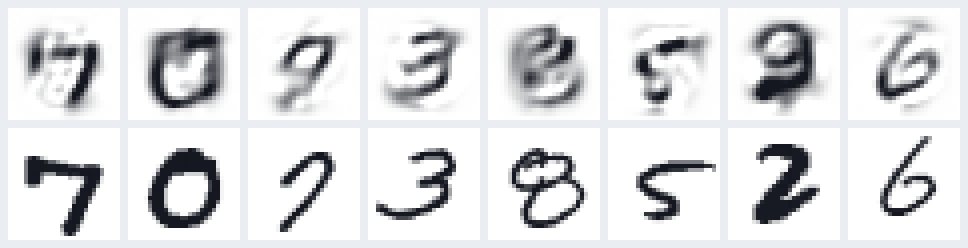
top: 8 samples · bottom: the closest of the 60,000 training images
What worked
The Part 1 loop, unchanged, learns a distribution over images and samples digit-like shapes, close to real digits but not copies of them.What did not
Blur from the straight-line squeeze, and each bump can only stretch its template along fixed directions, not bend a stroke.Why we cannot stop here
This recipe does not scale
| image | numbers | covariance per bump |
|---|---|---|
| MNIST, 28 × 28 grey | 784 | 307,720 |
| 32 × 32 colour | 3,072 | 4.7 million |
| 64 × 64 colour face | 12,288 | 75.5 million |
| 256 × 256 colour photo | 196,608 | 19.3 billion |
We need a squeeze that can bend, learned by a network, and parts that are shared. Part 2: the autoencoder.
End of Part 1
What we did, and what comes next
What we did
- Learn = choose parameters that make the data probable.
- Generate = sample from the learned model.
- One bump was too simple; a hidden coin $z$ fixed it.
- Scoring $x$ sums over $z$; learning needs the backwards step $p(z\mid x)$.
- In code: one loop,
loss = -log_p(x).mean(); choose the size on new data. - On MNIST: PCA to 50 numbers, 100 Gaussian bumps over them, inverse PCA: digit-like samples, but blurry, and the recipe does not scale.
Next: images
PCA squeezed each image along straight lines. Next, learn the squeeze with a network: encode each image into a few numbers and rebuild it. That is the autoencoder.
Part 3 returns to this probabilistic story, with a code $z$ in place of the coin.
Part 2 of 7
From PCA to the autoencoder
Part 1 ended with PCA: squeeze an image to a few numbers along straight lines, then rebuild it. An autoencoder learns the squeeze with a network instead, so it can bend. First, the bridge: PCA is already one.
- ✓Distributions and fitting
- 2Autoencoders
- 3The probabilistic view
- 4KL divergence
- 5Variational inference and the ELBO
- 6Reparameterisation
- 7The VAE on MNIST
The bridge from Part 1
PCA was an autoencoder all along
Train the straight-line version by gradient descent
A linear autoencoder rediscovers PCA
enc = nn.Linear(784, d) # no activation dec = nn.Linear(d, 784) x_hat = dec(enc(x)) loss = ((x_hat - x)**2).sum(1).mean()
| $d$ | PCA, one SVD | linear AE, Adam | same directions? |
|---|---|---|---|
| 2 | 43.6 | 43.6 | 1.0 |
| 16 | 21.1 | 21.1 | 1.0 |
error: squared error per test image, summed over 784 grey pixels · last column: 1 means the decoder spans exactly PCA's directions
Gradient descent finds exactly PCA's error and PCA's directions. Only the individual vectors may differ: any rotation of the same directions rebuilds just as well.
Now let it bend
Same 2 numbers, add layers and ReLUs
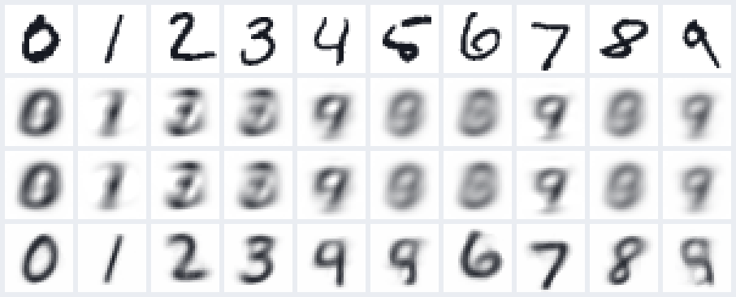
rows: test digits · PCA · linear autoencoder · MLP autoencoder, each squeezing to 2 numbers
| error | $d = 2$ | $d = 16$ |
|---|---|---|
| PCA | 43.6 | 21.1 |
| linear AE | 43.6 | 21.1 |
| MLP AE | 29.3 | 7.6 |
With only 2 numbers, the straight-line squeeze keeps a blurry average; the bendy one keeps which digit it was. Same idea, more flexible maps.
What the 2 numbers look like
Straight-line codes overlap; learned codes pull digits apart
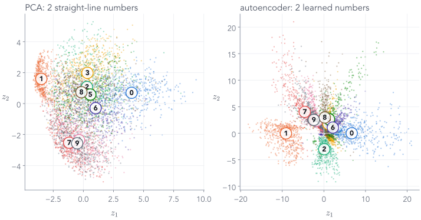
5,000 test digits, coloured by label (neither model saw labels). The autoencoder's squeeze bends to keep different digits apart.
Squeeze, then rebuild
An autoencoder on our 3
No labels needed: the image is its own target. The 2 numbers in the middle are all the decoder gets.
Comparing the rebuild with the original
Binary cross-entropy, one pixel at a time
| pixel | true value | predicted | loss |
|---|---|---|---|
| ink, predicted well | 1 | 0.90 | $-\log 0.90 = 0.11$ |
| paper, predicted well | 0 | 0.10 | $-\log 0.90 = 0.11$ |
| ink, missed | 1 | 0.20 | $-\log 0.20 = 1.61$ |
Pixels are 0 or 1 here (we binarise MNIST). Later we will see this is exactly a log-likelihood.
The autoencoder in PyTorch
Two small networks and one loss
encoder = nn.Sequential(nn.Flatten(), nn.Linear(784, 512), nn.ReLU(), nn.Linear(512, 256), nn.ReLU(), nn.Linear(256, d)) decoder = nn.Sequential(nn.Linear(d, 256), nn.ReLU(), nn.Linear(256, 512), nn.ReLU(), nn.Linear(512, 784)) z = encoder(x) # [B, d] the code logits = decoder(z) # [B, 784] one per pixel loss = F.binary_cross_entropy_with_logits( logits, x.flatten(1), reduction="none").sum(1).mean()
Encoder: 784 pixels in, $d$ numbers out. Each layer narrower than the last.
Decoder: the mirror image, $d$ numbers back up to 784.
Forward pass: image to code to one logit per pixel; $\mathrm{sigmoid}$ of a logit is the probability of ink.
Loss: binary cross-entropy summed over the 784 pixels of each image, then averaged over the batch. Train with the same three-line update as the bumps.
Trained on 60,000 digits
It reconstructs very well

top: test digits it never saw
bottom: decoded from a 16-number code
784 pixels squeezed into 16 numbers and back. Average loss 44.9 nats per image. Can we now make new digits?
How narrow can the middle be?
2 numbers or 16 numbers per image
a 2-number code · loss 128.1 nats per image
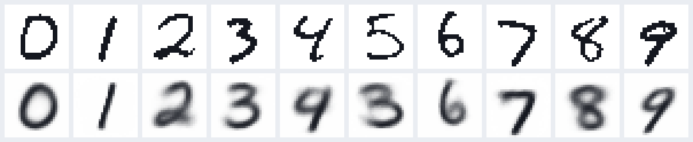
a 16-number code · loss 44.9 nats per image
Each pair of rows: test digits on top, reconstructions below. Two numbers keep the digit's identity; sixteen also keep its slant and stroke.
The encoder and decoder can be any network
MLP, CNN or ViT: three ways to squeeze
An autoencoder is a recipe, not an architecture: anything that maps 784 numbers to 16 and back, and can be trained.
In PyTorch
Only the encoder changes; the training loop does not
MLP
enc = nn.Sequential( nn.Flatten(), nn.Linear(784, 512), nn.ReLU(), nn.Linear(512, 256), nn.ReLU(), nn.Linear(256, 16))
CNN
enc = nn.Sequential( nn.Conv2d(1, 32, 4, 2, 1), nn.ReLU(), # 14x14 nn.Conv2d(32, 64, 4, 2, 1), nn.ReLU(), # 7x7 nn.Flatten(), nn.Linear(64*7*7, 16))
ViT
t = embed(patches(x)) + pos # [B,16,64] t = transformer(t) # 3 layers z = to_code(t.mean(1)) # [B,16]
x_hat = dec(enc(x)) # the same for all three loss = ((x_hat - x)**2).sum(1).mean()
Same data, same loss, same 16 numbers
How the three compare on MNIST
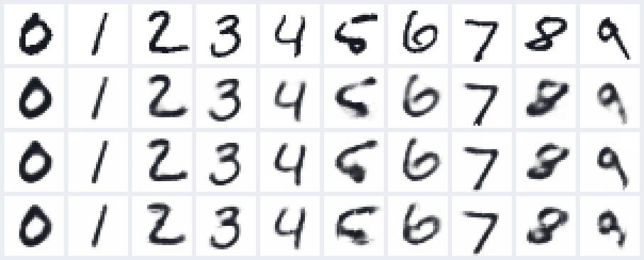
rows: test digits · MLP · CNN · ViT, each through 16 numbers
| parameters | test error | training | |
|---|---|---|---|
| MLP | 1,075,488 | 7.6 | 9.0 s |
| CNN | 170,193 | 7.3 | 23.0 s |
| ViT | 227,713 | 8.6 | 65.0 s |
| PCA | 13,328 | 21.1 | one SVD |
Lowest error: the CNN (7.3), with 6× fewer parameters than the MLP. Networks built for images use the pixel layout; the MLP has to learn it.
One idea, several variations
The autoencoder family
| variant | what changes | what it encourages |
|---|---|---|
| plain | nothing: compress, rebuild | a short code that keeps what matters |
| denoising | corrupt the input, rebuild the clean image | features that ignore noise |
| sparse | penalty: only a few code units may be on | each unit means one part of a digit |
| contractive | penalty: the code barely moves when the input moves a little | smooth, robust codes |
| variational | each image becomes a cloud of codes near $\N(0, I)$ | a code space you can sample from |
The first four change the loss or the input. The last one changes what a code is, and it is where today is going.
Following Lilian Weng, "From Autoencoder to Beta-VAE" (2018)
Variant 1 · denoising autoencoder
Feed it a damaged image, ask for the clean one
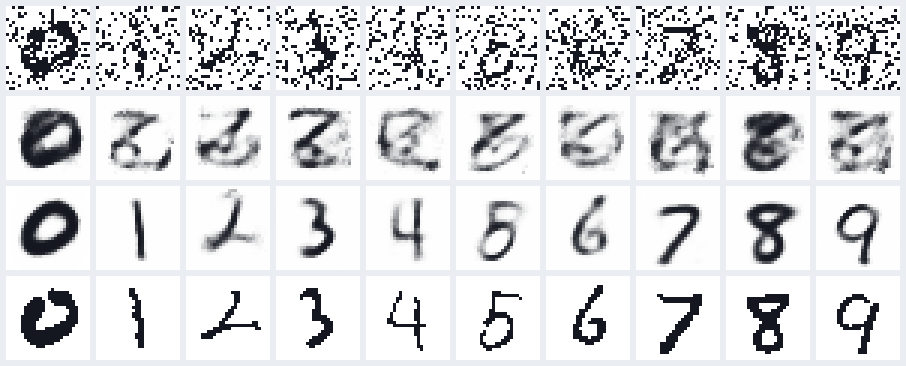
noisy = flip_pixels(x, rate=0.2) # the only new line loss = bce_with_logits(decoder(encoder(noisy)), x) # target: the CLEAN x
The plain autoencoder copies the noise. Trained to undo damage, the code must hold the digit, not the specks.
Variant 2 · sparse autoencoder
A wide code, but only a few units allowed on
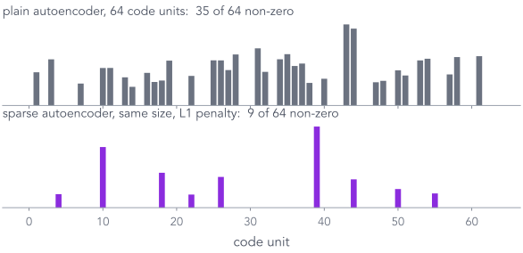
The 64-number code of our 3. Averaged over test digits: 34.9 units on without the penalty, 8.8 with it.
Variant 3 · contractive autoencoder (not trained here)
Nudge the input; the code should barely move
Read the penalty
for every code unit $h_j$ and every pixel $x_i$: how much does $h_j$ change if $x_i$ changes a little? Add up the squares.What it buys
two slightly different 3s get almost the same code. Nearby inputs, nearby codes: a first step towards a smooth code space.What autoencoders are used for
Compress, clean, search, and spot the odd one out
Compress: 784 pixels → 16 numbers, 49× fewer.
Clean: the denoising slide.
Search: similar images have nearby codes, so search the codes.
Spot anomalies: an image the model has never seen anything like gets a large reconstruction error.
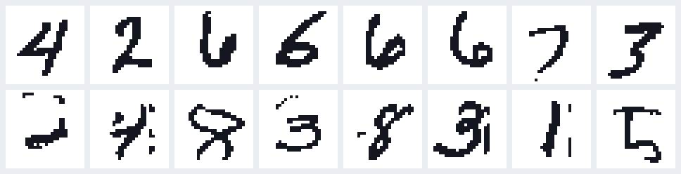
top: typical test digits, loss ≈ 40.5
bottom: the 8 worst of 10,000, loss up to 218.0
Useful, all of it. But none of it generates a new image. Can the decoder do that on its own?
Part 2, second half
Can an autoencoder generate?
The decoder turns codes into digits. If we pick a code ourselves, do we get a new digit?
The obvious idea
Keep the decoder, feed it a random code
The decoder turns codes into digits. So a random code should give a random digit. Right?
What is a "random code"?
$z \sim \N(0, I)$: two independent bell curves
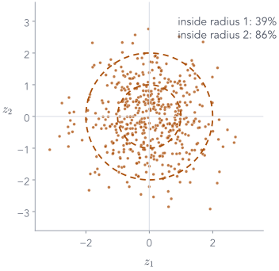
Draw $z_1$ from a standard bell curve $\N(0, 1)$: mean 0, spread 1. Draw $z_2$ the same way, independently.
Together that is written $\N(0, I)$: the 0 says the centre is $(0, 0)$; the I (identity matrix) says each number has spread 1 and the two do not depend on each other.
500 draws, plotted: most land within 2 of the origin, almost none beyond 3.
Why this choice? It is the simplest distribution we can sample from. The decoder, though, was never told about it.
What actually comes out
Random codes give scribbles

ten codes drawn from $\N(0, I)$ in 16 dimensions, through the trained decoder
The decoder only ever saw codes made by the encoder. Where do those codes live?
Look inside (2-number version)
Where 5,000 test digits land
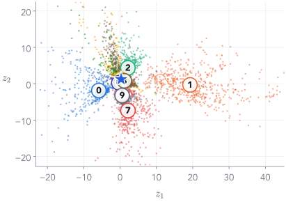
Each dot is one test digit's code, coloured by its true label. The star is our 3.
Same digits cluster together. Nobody asked for that; it just helps reconstruction.
Look at the axes: $z_1$ runs from −18.5 to 40.4, $z_2$ from −19.7 to 19.4. Nothing made the codes stay near the origin.
The code space has an arbitrary shape, scale and position.
Overlay random codes
Random draws all land in one small spot
Now add 150 random codes from $\N(0, I)$ (black ×), the kind we fed the decoder two slides ago. Dashed circles: radius 1 and 2. On this map they all fall into one small crowded patch (zoomed, bottom right).

ten of them decoded: some digits, some smudges
And we can never generate a 1: the 1s live near $z_1 \approx 20$.
To sample, we need to know where the codes are, and every point there must decode to something sensible.
Try it: the trained autoencoder, in your browser
Pick a code, any code, and decode it
A real digit's code decodes well. A random code usually gives a smudge: the decoder only learned the dotted regions.
Part 1's tool, on the autoencoder's codes
Fit bumps to where the codes actually are
random codes from $\N(0, I)$, decoded by a 16-number autoencoder
50 Gaussian bumps fitted to PCA's 16 numbers, sampled, inverse PCA
50 Gaussian bumps fitted to the autoencoder's 16 numbers, sampled, decoded
Bolting a density onto the codes works, and a better squeeze gives better samples. The VAE goes one step further: it shapes the codes during training, so that $\N(0, I)$ itself is the right density.
What we want instead
Encode to a cloud, not a point
A preview of where we are going
The same plot for a VAE
Same data, same 2-number code, same random draws. Now the codes sit inside $\N(0, I)$.

the same kind of random codes, decoded
To get here: make the model probabilistic (Part 3), measure how close two distributions are (Part 4), and derive the loss (Part 5).
End of Part 2
What we did, and what comes next
What we did
- An encoder squeezes an image into a short code; a decoder rebuilds it. The image is its own target.
- Random codes from $\N(0, I)$ decode to scribbles.
- The codes spread over an arbitrary range, and the decoder never saw the space between them.
- Variants change the input (denoising) or add a penalty (sparse, contractive).
- The wish: encode each image to a cloud, and keep every cloud near $\N(0, I)$.
Next: the probabilistic view
Turn the decoder into a probability model with a prior over codes, and ask what it would take to train it by maximum likelihood, as in Part 1.
Part 3 of 7
The probabilistic view: a decoder is a likelihood
The autoencoder could not generate because nothing said where codes live. Part 1 had exactly what is missing: a prior over the hidden choice. Put Part 1's story and Part 2's decoder together.
- ✓Distributions and fitting
- ✓Autoencoders
- 3The probabilistic view
- 4KL divergence
- 5Variational inference and the ELBO
- 6Reparameterisation
- 7The VAE on MNIST
From a coin to a code
Same story, bigger pieces
| two bumps (so far) | images (from now on) | |
|---|---|---|
| hidden $z$ | a coin: A or B | 2 real numbers $(z_1, z_2)$, drawn from $\N(0, I)$ |
| $p(x\mid z)$ | a bump at $-2$ or $+2$ | a neural network, the decoder, with weights $\theta$ |
| observed $x$ | one number | 784 pixels, each ink (1) or paper (0) |
| sum over $z$ | 2 terms | every point in a plane: infinitely many |
Next three slides: generate one image this way, one step at a time.
Generating an image · step 1 of 3
Draw a code
Two numbers, each from a standard bell curve: like flipping the coin, but the "coin" can land anywhere in the plane.
This draw: $z = (−0.18,\ −1.5)$.
On its own, $z$ means nothing. The decoder will give it meaning.
Generating an image · step 2 of 3
Decode it into 784 pixel probabilities
$\pi_i$ is the probability that pixel $i$ is ink. Dark grey = probably ink; white = probably paper.
Generating an image · step 3 of 3
Flip one coin per pixel
probabilities $\pi$
one sample $x$
Each pixel independently: ink with probability $\pi_i$.
That is a generated image. In practice we usually display $\pi$ itself, because it looks cleaner.
The same two steps as before
Generating is easy. Learning is the catch.
Generate ✓
draw $z \sim \N(0,I)$, decode, flip pixels. Three slides, done.Learn ?
choose the decoder's weights $\theta$ to make the training images probable:The rest of this part: why this integral is so hard, and the three ways people get around it.
The model, as a picture
Two arrows: generate down, infer up
Maximum likelihood for our 3
How probable is our 3 under the model?
With the coin we summed over two values:
A code can be any point in the plane, so the sum becomes an integral:
2 numbers per code, so we can afford a 901 × 901 grid of decoder calls: $\log p_\theta(x) = −128.7$ nats.
Why not just compute $p_\theta(x)$?
The integral is intractable
No formula. With two bumps, $p(x)$ was a sum of 2 terms. Here it is $\int p(z)\,p_\theta(x\mid z)\,dz$ with a neural network inside: no algebra gives the answer.
Too many terms to add up. Put a grid of 901 points on every axis of the code and add up the decoder's answers:
"Intractable" means exactly this: no formula, and far too many terms to sum.
| numbers in $z$ | decoder calls |
|---|---|
| 1 | 901 |
| 2 (our 3) | $8.1\times 10^{5}$ · a second |
| 4 | $6.6\times 10^{11}$ · a week |
| 8 | $4.3\times 10^{23}$ |
| 16 | $1.9\times 10^{47}$ |
And we need $p_\theta(x)$ for every image, at every training step.
Idea: estimate the integral by sampling
Random codes almost never hit the right patch
A typical random code makes our 3 about $e^{243}$ times less probable than the best code. Blind sampling wastes almost every draw.
Inference, like the coin and the bumps
The backwards step: which codes could have made our 3?
Part 1's Bayes table, with a plane of codes instead of two bumps:
The bottom is the evidence: the same impossible integral. So the posterior is out of reach too.
From the 2-number grid we can still look at it: a small, slightly tilted patch near $(0.25,\ −1.88)$, about 0.05 wide. The prior is 1 wide: one image pins its code down tightly.
Training needs this patch for every image. Next: three ways to approximate a posterior we cannot compute.
When the posterior cannot be computed, approximate it
Three ways, all run on our 3's real posterior
Laplace: find the peak, fit a Gaussian to the curvature there. Fast, local.
MCMC: a random walk that visits regions in proportion to the posterior. Exact in the long run, slow.
Variational: choose a simple family $q$ and optimise it to be as close as possible. Fast, trainable.
Today: only the variational one. It turns inference into optimisation, which is what neural networks are good at.
The variational idea, for our 3
Propose a simple $q$, then pull it towards the true posterior
Four numbers to choose: a centre $m = (m_1, m_2)$ and two widths $s_1, s_2$.
Goal: make $q(z)$ as close as possible to $p_\theta(z\mid x)$, the shaded patch.
"As close as possible" needs a number for how far apart two distributions are.
That number is the KL divergence: the first thing in Session 2.
End of Part 3 · end of Session 1
What we did, and what comes next
What we did
- Learn = make the data probable; generate = sample. Code: one loop.
- Autoencoders compress and rebuild (plain, denoising, sparse, contractive), but cannot generate.
- As a probability model: prior $p(z) = \N(0, I)$, likelihood $p_\theta(x\mid z)$ from the decoder.
- Training needs $p_\theta(x)$ and the posterior $p_\theta(z\mid x)$: both intractable.
- Variational idea: a simple $q$, pulled close to the posterior.
Session 2
A distance between distributions (KL), the loss that pulls $q$ close without ever computing $p_\theta(x)$ (the ELBO), gradients through random draws, and the VAE on MNIST.
Session 2 · where we stopped
Last time: we need $q$ close to a posterior we cannot compute
A decoder plus a prior is a probability model: $p(z)\,p_\theta(x\mid z)$.
Training it needs $p_\theta(x) = \int p(z)\,p_\theta(x\mid z)\,dz$: intractable.
So does the posterior $p_\theta(z\mid x)$, the shaded patch for our 3.
Variational idea: a simple Gaussian $q$ (purple), pulled close to it.
$\log p(D) = \ELBO(q) + \KL\big(q\,\|\,p(\theta\mid D)\big)$ for every $q$
$z = \mu + \sigma\cdot\eps$: a random draw with a gradient
Today: those two lines for our 3, then one network that applies them to every image: the VAE.
Part 4 of 7
KL divergence, recalled for our 3's code
We want $q$ close to the posterior. The VI lecture built "close" from scratch (its Part 2). Here: the facts we need from it, and the one formula every VAE loss uses, a cloud against the prior $\N(0, I)$.
- ✓Distributions and fitting
- ✓Autoencoders
- ✓The probabilistic view
- 4KL divergence
- 5Variational inference and the ELBO
- 6Reparameterisation
- 7The VAE on MNIST
From the VI lecture, Part 2
KL is an average of log-ratios, under its first argument
Never negative
$\KL \ge 0$, and $= 0$ only when $q = p$: the log lies below its tangent.Not symmetric
$\KL(q\|p) \ne \KL(p\|q)$. Which one we minimise changes the answer.VI uses $\KL(q\,\|\,\text{posterior})$
An average under $q$, which we can draw from. The price: $q$ seeks one mode and comes out too narrow.Our 3's posterior is a single small patch, so there is only one mode to seek. What a diagonal $q$ cannot do is tilt with it.
VI lecture (vi.html), Part 2: KL for densities, never negative, not symmetric · KL between two Gaussians, live · forward vs reverse on two bumps
The KL in every VAE loss
A Gaussian cloud against the prior $\N(0, 1)$
The VI lecture's formula for two Gaussians:
Put in the prior, $\mu_p = 0$ and $\sigma_p = 1$:
Check on the toy cloud $q = \N(1, 0.5^2)$, the shaded area:
A code with several coordinates and a diagonal $q$: one such term per coordinate, added. Moving a centre costs $\tfrac12\mu^2$; a width other than 1 costs $\tfrac12(\sigma^2 - 1 - \log\sigma^2)$.
VI lecture (vi.html), Part 2: derive the Gaussian KL · the answer, and torch's _kl_normal_normal
End of Part 4
What we did, and what comes next
What we did
- From the VI lecture: $\KL(q\|p)$ is an average under $q$, never negative, not symmetric.
- VI minimises $\KL(q\,\|\,\text{posterior})$ because we can draw from $q$; $q$ seeks a mode.
- Against the prior: $\tfrac12(\mu^2+\sigma^2-1-\log\sigma^2)$ per coordinate, added.
Next: make $q$ close to the posterior
$\KL(q\,\|\,p_\theta(z\mid x))$ contains the intractable $p_\theta(x)$. The VI lecture's ELBO removes it; Part 5 runs it on our 3, then hands the job to an encoder.
Part 5 of 7
Variational inference for our 3, then for every image
The VI lecture turned "make $q$ close to the posterior" into a loss we can compute, the ELBO, and fitted a coin with it (its Part 6). Here the unknown is our 3's code: run the same loss on it, read the numbers, and see why doing this image by image leads to an encoder.
- ✓Distributions and fitting
- ✓Autoencoders
- ✓The probabilistic view
- ✓KL divergence
- 5Variational inference and the ELBO
- 6Reparameterisation
- 7The VAE on MNIST
From the VI lecture, Part 6, with an image in place of the coin
The same identity, written for one image
| VI lecture | here |
|---|---|
| $\theta$, the unknown | $z$, our 3's code |
| $D$, the data | $x$, our 3 |
| prior $p(\theta)$ | $p(z) = \N(0, I)$ |
| likelihood $p(D\mid\theta)$ | decoder $p_\theta(x\mid z)$ |
The ELBO needs only the joint, $p_\theta(x, z) = p(z)\,p_\theta(x\mid z)$: prior times decoder. No $p_\theta(x)$, no posterior.
$\log p_\theta(x)$ does not move when $q$ does, so whatever the ELBO gains, the KL to the posterior loses.
Careful with one letter: there, $\theta$ was the unknown; here it names the decoder's weights, and the unknown is $z$.
VI lecture (vi.html), Part 6: the catch · substitute Bayes · the evidence comes out · the lower bound · ELBO + KL for the coin
The lower bound, measured on our 3
The KL is never negative, so the ELBO sits below $\log p_\theta(x)$
Our 3, two choices of $q$. The right end, $\log p_\theta(x)$, is fixed by the model; it does not move when $q$ changes.
the prior
inference (next slides)
The total cannot move, so raising the ELBO must shrink the KL: maximise the ELBO and $q$ approaches the posterior, without ever computing $p_\theta(x)$.
The VI lecture's second form, for an image
The ELBO, in symbols and in words
The two wishes from the end of Part 2, derived rather than invented: rebuild well, and keep codes where the prior can find them.
VI lecture (vi.html), Part 6: two ways to write the same ELBO
Variational inference by hand, for our 3
Four numbers, gradient ascent on the ELBO
x = our_3 # 784 pixels, fixed m = torch.zeros(2, requires_grad=True) # q's centre log_s = torch.zeros(2, requires_grad=True) # q's log-widths opt = torch.optim.Adam([m, log_s], lr=0.03) for step in range(800): z = m + log_s.exp() * torch.randn(64, 2) # 64 draws from q rec = -bce(decoder(z), x).sum(1).mean() # E_q[log p(x|z)] kl = 0.5 * (m**2 + (2*log_s).exp() - 1 - 2*log_s).sum() loss = -(rec - kl) # minus the ELBO opt.zero_grad(); loss.backward(); opt.step()
Only $q$ is learned. The decoder is a trained one, kept fixed; $x$ is our 3. Start at $q = \N(0, I)$: $m = 0$, $s = 1$.
Draw codes from $q$: centre plus width times standard noise: the VI lecture's reparameterised draw (its Part 5), so gradients reach m and log_s.
The two terms: reconstruction, averaged over the 64 draws; the KL to the prior by the Gaussian formula from Part 4.
The same three-line loop as fitting one Gaussian in Part 1. The ELBO rises from −386.0 to −128.8.
Watch $q$ travel
From $\N(0, I)$ to our 3's patch in 800 steps

Final ELBO −128.83, just under $\log p_\theta(x) = −128.75$. The gap, $\KL(q\,\|\,\text{posterior})$, is 0.08 nats: $q$ is almost exactly right.
Inside those 800 steps
The two terms pull against each other
| step | reconstruction $\E_q[\log p_\theta(x\mid z)]$ | $-\,\KL(q\,\|\,\text{prior})$ | ELBO |
|---|---|---|---|
| 0 · $q$ is the prior | −386.2 | $-\,$0.0 | −386.2 |
| 20 | −275.9 | $-\,$0.53 | −276.4 |
| 50 | −170.9 | $-\,$2.1 | −173.0 |
| 800 | −122.2 | $-\,$6.73 | −128.9 |
The ELBO is a trade: a $q$ precise enough to rebuild the image, no more precise than it needs to be.
A bonus: with $q$, even $p_\theta(x)$ becomes easy to estimate
Sample codes where the patch is, then reweight

20 runs of 1,000 draws each. From the prior, the estimates scatter from −134.8 to −127.6. From $q$: −128.74, give or take 0.017.
800 steps for one image
Amortised inference: learn to predict $q$
Our 3: ELBO −128.83 by hand in 800 steps, −129.3 from the encoder in one pass. Pay once during training; a little worse, thousands of times cheaper.
Put the pieces together
Encoder + decoder + ELBO = the variational autoencoder
"Variational"
$q$ always depended on the image; now we write it $q_\varphi(z\mid x)$: the best Gaussian under the ELBO, predicted by a network."Autoencoder"
image → encoder → code → decoder → image: the shape from Part 2, now with a cloud for a code.Trained together
Pushing on $\theta$ raises the ELBO mostly by making the data more probable: a better model. Pushing on $\varphi$ shrinks the gap: a better $q$.Kingma & Welling (2014) and Rezende et al. (2014): one network for the likelihood, one for the posterior, one loss for both.
The gap for the encoder's $q$, measured on our 3
Two different KLs, two different jobs
VI by hand closed the gap to 0.08 nats in 800 steps; the encoder's single pass leaves 0.55. That small loss is the price of amortising.
End of Part 5
What we did, and what comes next
What we did
- Our 3: $\log p_\theta(x) = \ELBO + \KL(q\,\|\,\text{posterior})$, as in the VI lecture.
- ELBO = reconstruction $-\ \KL(q\,\|\,\text{prior})$: both computable.
- VI by hand fits our 3's $q$ in 800 steps and leaves a gap of 0.08 nats.
- An encoder predicts $q$ in one pass, with a gap of 0.55: that is the VAE.
Next: gradients through a random draw
The loss draws $z$ from the encoder's cloud. Part 6: the VI lecture's reparameterisation, with $\mu$ and $\log\sigma^2$ coming out of a network.
Part 6 of 7
Backpropagating through the encoder's random draw
VI by hand drew each code as $m + s\cdot\eps$ and backpropagated through it: the VI lecture's reparameterisation trick (its Part 5). The VAE does the same, except that $\mu$ and $\sigma$ come out of the encoder, as $\log\sigma^2$. One recalled picture, one more link in the chain, and three lines of PyTorch.
- ✓Distributions and fitting
- ✓Autoencoders
- ✓The probabilistic view
- ✓KL divergence
- ✓Variational inference and the ELBO
- 6Reparameterisation
- 7The VAE on MNIST
From the VI lecture, Part 5, with the encoder in front
Draw $\eps$ first, and the path back to $\mu$ and $\sigma$ is arithmetic
As the VI lecture showed, sample() would cut the graph at $z$. Each draw gives a noisy gradient; on average it is exact.
VI lecture (vi.html), Part 5: the blocked graph · sample() fails · the reparameterised graph · checked in code · rsample
What the encoder adds: one more link in the chain
The encoder outputs $v = \log\sigma^2$, not $\sigma$
Autograd adds this factor for us: in code it is the one line std = torch.exp(0.5 * logvar).
In PyTorch
Three lines
# encoder outputs, shape [B, 2] each mu, logvar = encoder(x) std = torch.exp(0.5 * logvar) # sigma = exp(v / 2) eps = torch.randn_like(std) # standard normal, no grad z = mu + std * eps # differentiable in mu, std
std is $\sigma = e^{v/2}$: the extra link from the last slide.
Normal(mu, std).rsample() does the same thing, as in the VI lecture; .sample() drops the gradient.
For our 3: $\mu = (0.3,\, −1.93)$, $\eps = (0.62,\, −1.15)$ gives $z = (0.33,\, −1.99)$.
End of Part 6
What we did, and what comes next
What we did
- From the VI lecture: sampling $z$ directly cuts the gradient path; $z = \mu + \sigma\eps$ with $\eps \sim \N(0, I)$ keeps it.
- $\partial z/\partial\mu = 1$ and $\partial z/\partial\sigma = \eps$; one draw is noisy, the average is exact.
- The encoder outputs $v = \log\sigma^2$: one more factor, $\partial\sigma/\partial v = \sigma/2$.
- In PyTorch: three lines, or
rsample().
Next: everything together
Encoder, cloud, reparameterised sample, decoder, ELBO: train it on MNIST and follow our 3 through every step.
Part 7 of 7
The variational autoencoder, end to end
Every piece is in place: encoder, cloud, KL, ELBO, reparameterisation. Follow our 3 through the trained network, then generate.
- ✓Distributions and fitting
- ✓Autoencoders
- ✓The probabilistic view
- ✓KL divergence
- ✓Variational inference and the ELBO
- ✓Reparameterisation
- 7The VAE on MNIST
Our 3 through the trained VAE · 1 of 3
Encode: the image becomes a cloud
$\sigma \approx 0.05$ against the prior's $\sigma = 1$: the encoder is very sure where our 3 belongs.
Our 3 through the trained VAE · 2 of 3
Sample: one code from inside the cloud
Our 3 through the trained VAE · 3 of 3
Decode, then score against the real 3
Loss for our 3: $122.3 + 6.97 = 129.3$ nats. Backpropagate it into both $\theta$ and $\varphi$.
Step 3, zoomed in: the reconstruction term
Each pixel is a coin flip with probability $\pi_i$
our 3, one 5 × 5 patch
Binary cross-entropy is not a design choice: it is the Bernoulli log-likelihood. Gaussian pixels would give squared error.
All three steps on one page
The whole VAE, for our 3
The same network as tensors
Shapes, layer by layer
The KL term for our 3
A tight cloud is expensive
| coordinate | $\mu_j$ | $\sigma_j$ | $\mu_j^2$ | $\sigma_j^2 - 1$ | $-\log\sigma_j^2$ | $\tfrac12(\text{sum})$ |
|---|---|---|---|---|---|---|
| $z_1$ | 0.3 | 0.047 | 0.09 | $-1.00$ | 6.11 | 2.6 |
| $z_2$ | −1.93 | 0.05 | 3.72 | $-1.00$ | 6.00 | 4.37 |
| total | 6.97 nats |
Most of the cost is $-\log\sigma^2$: the price of being precise. Reconstruction wants precision; the KL resists.
One training step
The whole algorithm fits on a slide
mu, logvar = model.encoder(x) # [B,2], [B,2] z = mu + torch.exp(0.5*logvar) * torch.randn_like(mu) logits = model.decoder(z) # [B,784] recon = F.binary_cross_entropy_with_logits( logits, x.flatten(1), reduction="none").sum(1) kl = 0.5 * (mu**2 + logvar.exp() - 1 - logvar).sum(1) loss = (recon + kl).mean() # per image, then batch opt.zero_grad(); loss.backward(); opt.step()
Encode, reparameterise, decode.
Sum the BCE over all 784 pixels of each image.
Sum the KL over the 2 code coordinates of each image.
Add per image, average over the batch, step both encoder and decoder.
Averaging BCE over pixels instead of summing silently makes the KL 784× stronger.
Training run, test set
Reconstruction falls, KL rises, then both settle
After 40 epochs: reconstruction 128.8 + KL 7.1 = 135.9 nats per test image.
The payoff
Generate: random code → decoder. No encoder.
This is the whole generator. The encoder was scaffolding for training.
48 random codes each
Samples from two VAEs

2-number code · reconstruction 128.8

16-number code · reconstruction 57.8
More code dimensions: sharper and more varied, but some samples are odd. Neither is perfect.
Because the code is 2-D, we can draw the whole map
Every point in the code space is a digit
where test digits land

decoded on an 18 × 18 grid, spaced by quantiles of $\N(0,1)$
Neighbouring codes give similar digits, and every region decodes to something plausible.
Try it: the trained VAE, in your browser
The same app, now for the VAE
Now random codes from $\N(0, I)$ land among the dots, and almost every one decodes to a digit.
The cover, explained
Walk in a straight line from our 3 to a 7
encode both, take 12 evenly spaced points between their $\mu$'s, decode each (16-number VAE)
the same walk in the 2-number VAE: the line passes through the 5, 8, 4 and 9 regions on the map
The tug of war, made visible
No KL, normal KL, too much KL
autoencoder (no KL)

recon 128.1 · no KL term
VAE, loss = recon + KL
recon 128.8 · KL 7.1
recon + 8 × KL

recon 140.4 · KL 3.9
Rows: code space · reconstructions · random samples. Too little KL: samples fail. Too much: everything blurs together.
An honest look
Why are VAE samples blurry?
1. It fits $\KL(\text{data}\,\|\,\text{model})$. Like the wide Gaussian on our bumps, it must cover every training digit, so when unsure it spreads probability.
2. Pixels are independent given $z$. The decoder outputs one probability per pixel. If a stroke could be here or one pixel over, the best $\pi$ is grey in both places.
3. We show $\pi$, the mean, not a sample. A sample would be speckled instead of grey.
$\pi$ (the mean)
a sample
Not a law of nature: bigger codes, better decoders and better likelihoods all sharpen VAEs.
End of Part 7
What we did, and what comes next
What we did
- Our 3: encode to a cloud, sample a code, decode, score: loss $= 129.3$.
- Training: reconstruction falls, KL rises, both settle.
- Generation needs only the prior and the decoder.
- The KL weight trades sharp reconstructions against a usable code space; samples blur.
Next lecture: a different idea
VAEs maximise a bound on $p_\theta(x)$. GANs skip $p_\theta(x)$ entirely: a second network learns to judge real from fake.
Three ways to generate
Same goal, three different training signals
Return to the opening
What you can now explain
the cover: encode a 3 and a 7, walk a straight line between their codes, decode each point.
every code in $\N(0, I)$ decodes to a digit: recon + KL, derived from $\KL(q\,\|\,\text{posterior})$.
a conditional VAE: give the label to the encoder and the decoder, and choose which digit to draw.
Before you leave
Three exit questions
- To generate a new digit with a trained VAE, which parts of the network do you use? The prior and the decoder only: $z\sim\N(0, I)$, then decode. The encoder is for training.
- Two different KL divergences appear in the VAE story. What does each compare, and which one is in the loss? $\KL(q\,\|\,\text{prior})$ is in the loss (6.97 for our 3). $\KL(q\,\|\,\text{true posterior})$ is the gap between the ELBO and $\log p_\theta(x)$ (0.55).
- We never compute $p_\theta(x)$. Why does maximising the ELBO still pull $q$ towards the true posterior? $\log p_\theta(x) = \ELBO + \KL(q\,\|\,\text{posterior})$, and the left side does not depend on $q$. Whatever the ELBO gains, the KL loses.
After the GAN lecture
What if we generate by removing noise, a little at a time?

our 3
→ add a little Gaussian noise, again and again →
pure noise
Adding noise is easy and gives free training pairs. Can a network learn to undo one small step, then walk all the way back from pure noise?
Appendix
A second route to the ELBO
The VI lecture (its Part 6) reached the ELBO from $\KL(q\,\|\,\text{posterior})$. Many textbooks reach it from $\log p_\theta(x)$ with Jensen's inequality instead. Same bound, one more tool.
Appendix · the ELBO through Jensen · move 1 of 4
Start from what we want
A second route to the bound of Part 5, starting from $\log p_\theta(x)$ instead of the KL.
Appendix · the ELBO through Jensen · move 2 of 4
Multiply and divide by the encoder's cloud
Why bother? Because the next move turns this integral into an average under $q$, and $q$ knows where the patch is.
Appendix · the ELBO through Jensen · move 3 of 4
Read the integral as an average under $q$
Still exact. We now average over codes drawn from the encoder's cloud, right where the patch is.
Appendix · the ELBO through Jensen · a tool for move 4
Jensen's inequality, in one picture
$\log$ curves downwards (it is concave), so every chord lies below the curve.
Two values, $R=1$ and $R=4$:
Appendix · the ELBO through Jensen · move 4 of 4
Swap the log and the average: the only inequality
The same ELBO as Part 5. This route shows it is a bound; the KL route (the VI lecture's Part 6) also shows the gap is $\KL(q\,\|\,\text{posterior})$.
Further reading
Where to go next
- Lilian Weng, From Autoencoder to Beta-VAE (lilianweng.github.io): the autoencoder family of Part 2
- Jaan Altosaar, Tutorial: what is a variational autoencoder?: the neural-network and probability views side by side
- Kingma & Welling, Auto-Encoding Variational Bayes, arXiv 1312.6114
- Blei, Kucukelbir & McAuliffe, Variational Inference: A Review for Statisticians, arXiv 1601.00670
- Bishop, Pattern Recognition and Machine Learning, §10.1: the ELBO + KL picture of Part 5
- The VI lecture (vi.html): KL, the ELBO and reparameterisation on toys; and three YouTube videos on KL divergence (video ids sjgZxuCm_8Q, KHVR587oW8I, tXE23653JrU)
- Stanford CS236 notes on VAEs (deepgenerativemodels.github.io)
- This lecture's code: scripts/train_models.py (all models), scripts/make_figures.py and make_figures_extra.py (every number on the slides)